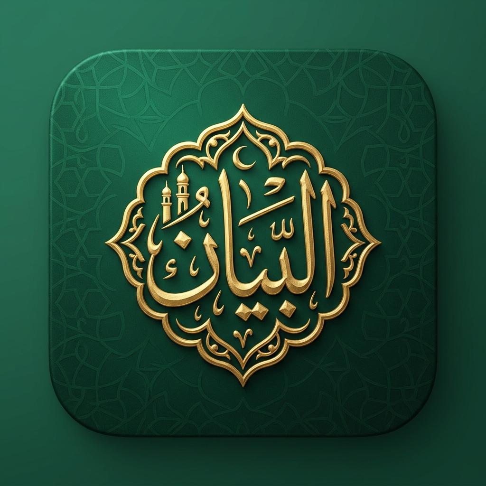

<!DOCTYPE html>
<html lang="en">
<head>
    <meta charset="UTF-8">
    <title>App Store Slide Exporter (1290 x 2796)</title>
    <link rel="preconnect" href="https://fonts.googleapis.com">
    <link rel="preconnect" href="https://fonts.gstatic.com" crossorigin>
    <link href="https://fonts.googleapis.com/css2?family=Amiri+Quran&family=Plus+Jakarta+Sans:wght@400;500;600;700;800;900&display=swap" rel="stylesheet">
    <style>
        * {
            box-sizing: border-box;
            margin: 0;
            padding: 0;
        }

        body {
            width: 1290px;
            height: 2796px;
            overflow: hidden;
            background: #010805 radial-gradient(circle at 50% 12%, #082d1c 0%, #03140c 50%, #000402 100%);
            color: #ffffff;
            font-family: 'Plus Jakarta Sans', -apple-system, BlinkMacSystemFont, sans-serif;
            position: relative;
            display: flex;
            flex-direction: column;
            align-items: center;
            padding-top: 140px;
        }

        /* Top Luxury Ambient Aura */
        .ambient-glow {
            position: absolute;
            top: -150px;
            left: 50%;
            transform: translateX(-50%);
            width: 900px;
            height: 600px;
            background: radial-gradient(circle, rgba(212, 175, 55, 0.22) 0%, rgba(22, 98, 64, 0.3) 40%, transparent 70%);
            pointer-events: none;
        }

        /* App Category Pill */
        .pill-tag {
            display: inline-flex;
            align-items: center;
            gap: 16px;
            padding: 14px 38px;
            background: rgba(212, 175, 55, 0.12);
            border: 2px solid rgba(212, 175, 55, 0.4);
            border-radius: 999px;
            font-size: 26px;
            font-weight: 800;
            letter-spacing: 4px;
            color: #F3E5AB;
            text-transform: uppercase;
            margin-bottom: 34px;
        }

        .pill-tag img {
            width: 44px;
            height: 44px;
            border-radius: 11px;
        }

        /* Main Headline */
        .slide-title {
            font-size: 78px;
            font-weight: 900;
            text-align: center;
            line-height: 1.15;
            letter-spacing: -1px;
            margin-bottom: 24px;
            max-width: 1100px;
            background: linear-gradient(180deg, #FFFFFF 20%, #E2E8F0 100%);
            -webkit-background-clip: text;
            -webkit-text-fill-color: transparent;
        }

        .slide-title span {
            background: linear-gradient(135deg, #FFE082 0%, #D4AF37 50%, #AA7C11 100%);
            -webkit-background-clip: text;
            -webkit-text-fill-color: transparent;
        }

        /* Subtitle */
        .slide-subtitle {
            font-size: 38px;
            font-weight: 500;
            color: rgba(255, 255, 255, 0.75);
            text-align: center;
            line-height: 1.45;
            max-width: 1040px;
            margin-bottom: 70px;
        }

        /* iPhone 16 Pro Max Frame Mockup (1040 x 2000) */
        .iphone-frame {
            width: 1020px;
            height: 2000px;
            background: #000000;
            border-radius: 130px 130px 0 0;
            border: 14px solid #1a1e22;
            border-bottom: none;
            box-shadow: 0 -25px 90px rgba(0, 0, 0, 0.9), inset 0 0 0 4px rgba(255,255,255,0.09);
            position: relative;
            overflow: hidden;
            display: flex;
            flex-direction: column;
        }

        /* Dynamic Island */
        .dynamic-island {
            position: absolute;
            top: 36px;
            left: 50%;
            transform: translateX(-50%);
            width: 320px;
            height: 84px;
            background: #000000;
            border-radius: 46px;
            z-index: 100;
        }

        /* Screen Interior */
        .screen-interior {
            flex: 1;
            background: linear-gradient(180deg, #072216 0%, #020c08 55%, #010604 100%);
            padding: 160px 50px 0 50px;
            display: flex;
            flex-direction: column;
        }

        /* UI Styles */
        .screen-header-brand {
            text-align: center;
            margin-bottom: 60px;
        }

        .arabic-logo {
            font-family: 'Amiri Quran', serif;
            font-size: 72px;
            color: #F3E5AB;
            display: block;
        }

        .sub-brand {
            font-size: 24px;
            font-weight: 800;
            letter-spacing: 6px;
            color: #D4AF37;
            text-transform: uppercase;
        }

        /* RADAR ORB (Slide 1) */
        .radar-box {
            display: flex;
            flex-direction: column;
            align-items: center;
            margin: 40px 0 60px 0;
        }

        .orb {
            width: 440px;
            height: 440px;
            border-radius: 50%;
            background: radial-gradient(circle, #E6C65A 0%, #D4AF37 35%, #166240 70%, #03180e 100%);
            box-shadow: 0 0 130px rgba(212, 175, 55, 0.55), 0 0 60px rgba(22, 98, 64, 0.6);
            display: flex;
            align-items: center;
            justify-content: center;
            position: relative;
        }

        .orb-wave-1 {
            position: absolute;
            width: 600px;
            height: 600px;
            border-radius: 50%;
            border: 3px solid rgba(212, 175, 55, 0.35);
        }

        .orb-wave-2 {
            position: absolute;
            width: 760px;
            height: 760px;
            border-radius: 50%;
            border: 2px solid rgba(212, 175, 55, 0.2);
        }

        .orb svg {
            width: 140px;
            height: 140px;
            fill: #ffffff;
        }

        .live-words-pill {
            display: inline-flex;
            align-items: center;
            gap: 16px;
            padding: 18px 42px;
            background: rgba(0, 0, 0, 0.6);
            border: 2px solid rgba(212, 175, 55, 0.5);
            border-radius: 999px;
            margin-top: 30px;
            font-size: 32px;
            font-weight: 600;
            color: #F3E5AB;
            font-family: 'Amiri Quran', serif;
        }

        .hero-match-card {
            background: rgba(255, 255, 255, 0.06);
            border: 2px solid rgba(212, 175, 55, 0.45);
            border-radius: 46px;
            padding: 50px;
            backdrop-filter: blur(24px);
            margin-top: 20px;
            box-shadow: 0 20px 60px rgba(0, 0, 0, 0.5);
        }

        .confidence-badge {
            display: inline-flex;
            align-items: center;
            gap: 12px;
            font-size: 24px;
            font-weight: 800;
            color: #D4AF37;
            letter-spacing: 2px;
            margin-bottom: 20px;
        }

        .surah-title-ar {
            font-family: 'Amiri Quran', serif;
            font-size: 76px;
            color: #ffffff;
            line-height: 1.1;
        }

        .surah-title-en {
            font-size: 40px;
            font-weight: 800;
            color: #F3E5AB;
            margin: 10px 0 16px 0;
        }

        .reciter-subtitle {
            font-size: 30px;
            color: rgba(255, 255, 255, 0.7);
        }

        /* SLIDE 2 - MUSHAF READER */
        .mushaf-container {
            background: rgba(255, 255, 255, 0.05);
            border: 2px solid rgba(212, 175, 55, 0.35);
            border-radius: 44px;
            padding: 50px;
            text-align: right;
            direction: rtl;
            margin-top: 20px;
        }

        .mushaf-surah-bar {
            text-align: center;
            font-size: 36px;
            font-weight: 800;
            color: #F3E5AB;
            padding-bottom: 26px;
            border-bottom: 2px solid rgba(212, 175, 55, 0.25);
            margin-bottom: 34px;
        }

        .mushaf-arabic-body {
            font-family: 'Amiri Quran', serif;
            font-size: 54px;
            line-height: 2.2;
            color: #ffffff;
        }

        .ayah-circle {
            display: inline-flex;
            align-items: center;
            justify-content: center;
            width: 58px;
            height: 58px;
            border: 2px solid #D4AF37;
            border-radius: 50%;
            font-size: 28px;
            color: #D4AF37;
            margin: 0 10px;
        }

        .tafsir-dock {
            margin-top: 40px;
            background: rgba(212, 175, 55, 0.12);
            border: 2px solid rgba(212, 175, 55, 0.4);
            border-radius: 36px;
            padding: 36px;
        }

        /* SLIDE 3 - PRAYER HERO */
        .prayer-hero-card {
            background: linear-gradient(135deg, rgba(212, 175, 55, 0.22) 0%, rgba(6, 35, 22, 0.85) 100%);
            border: 2.5px solid rgba(212, 175, 55, 0.5);
            border-radius: 48px;
            padding: 56px 40px;
            text-align: center;
            margin-top: 10px;
        }

        .prayer-hero-countdown {
            font-size: 104px;
            font-weight: 900;
            color: #ffffff;
            font-variant-numeric: tabular-nums;
            margin: 18px 0;
            letter-spacing: -2px;
        }

        .prayer-table-row {
            display: flex;
            justify-content: space-between;
            align-items: center;
            padding: 26px 36px;
            background: rgba(255, 255, 255, 0.05);
            border-radius: 28px;
            margin-top: 18px;
            border: 2px solid rgba(255, 255, 255, 0.08);
            font-size: 32px;
        }

        .prayer-table-row.active {
            border-color: #D4AF37;
            background: rgba(212, 175, 55, 0.16);
            color: #F3E5AB;
            font-weight: 800;
        }

        /* SLIDE 4 - QIBLA */
        .compass-big-dial {
            width: 580px;
            height: 580px;
            border-radius: 50%;
            border: 4px dashed rgba(212, 175, 55, 0.45);
            margin: 60px auto 30px auto;
            position: relative;
            display: flex;
            align-items: center;
            justify-content: center;
            box-shadow: inset 0 0 80px rgba(212, 175, 55, 0.18), 0 0 70px rgba(0, 0, 0, 0.6);
        }

        .compass-needle-big {
            width: 14px;
            height: 480px;
            background: linear-gradient(to bottom, #D4AF37 50%, rgba(255, 255, 255, 0.25) 50%);
            border-radius: 8px;
            transform: rotate(102deg);
            box-shadow: 0 0 24px rgba(212, 175, 55, 0.9);
        }

        .kaaba-badge-big {
            position: absolute;
            top: 48px;
            right: 130px;
            background: #D4AF37;
            color: #03140c;
            font-size: 26px;
            font-weight: 900;
            padding: 10px 22px;
            border-radius: 16px;
            box-shadow: 0 4px 16px rgba(0, 0, 0, 0.4);
        }

        /* SLIDE 5 - SIRI */
        .siri-bubble-big {
            background: rgba(255, 255, 255, 0.08);
            border: 2px solid rgba(212, 175, 55, 0.4);
            border-radius: 36px;
            padding: 38px;
            margin-top: 30px;
        }

        .siri-bubble-user {
            font-size: 36px;
            font-weight: 800;
            color: #F3E5AB;
            margin-bottom: 16px;
            display: flex;
            align-items: center;
            gap: 14px;
        }

        .siri-bubble-answer {
            font-size: 32px;
            color: #ffffff;
            line-height: 1.5;
        }
    </style>
</head>
<body>

    <div class="ambient-glow"></div>

    <div id="slideContent">
        <!-- Injected via JavaScript based on URL query (?slide=1 to 5) -->
    </div>

    <script>
        const params = new URLSearchParams(window.location.search);
        const slideId = parseInt(params.get('slide') || '1');
        const container = document.getElementById('slideContent');

        if (slideId === 1) {
            container.innerHTML = `
                <div style="display: flex; flex-direction: column; align-items: center;">
                    <div class="pill-tag">
                        
                        <span>Instant Audio Recognition</span>
                    </div>
                    <h1 class="slide-title">Identify Quran Recitations<br><span>In Real-Time</span></h1>
                    <p class="slide-subtitle">Point your iPhone toward any recitation in a mosque, car, or TV to instantly identify the exact Surah, Ayah & Reciter.</p>

                    <div class="iphone-frame">
                        <div class="dynamic-island"></div>
                        <div class="screen-interior">
                            <div class="screen-header-brand">
                                <span class="arabic-logo">بَيَان</span>
                                <div class="sub-brand">QURAN RECOGNIZER</div>
                            </div>

                            <div class="radar-box">
                                <div class="orb">
                                    <div class="orb-wave-1"></div>
                                    <div class="orb-wave-2"></div>
                                    <svg viewBox="0 0 24 24"><path d="M12 2C6.48 2 2 6.48 2 12s4.48 10 10 10 10-4.48 10-10S17.52 2 12 2zm0 18c-4.42 0-8-3.58-8-8s3.58-8 8-8 8 3.58 8 8-3.58 8-8 8zm-1-13h2v6h-2zm0 8h2v2h-2z"/></svg>
                                </div>
                                <div class="live-words-pill">
                                    <span>🎙️ Hearing: ٱلْحَمْدُ لِلَّهِ رَبِّ ٱلْعَٰلَمِينَ</span>
                                </div>
                            </div>

                            <div class="hero-match-card">
                                <div class="confidence-badge">✓ 98% CONFIDENCE MATCH</div>
                                <div class="surah-title-ar">سورة الرحمن</div>
                                <div class="surah-title-en">Surah Ar-Rahman • Ayah 1–4</div>
                                <div class="reciter-subtitle">Mishary Rashid Alafasy • حفص عن عاصم</div>
                            </div>
                        </div>
                    </div>
                </div>
            `;
        } else if (slideId === 2) {
            container.innerHTML = `
                <div style="display: flex; flex-direction: column; align-items: center;">
                    <div class="pill-tag">
                        
                        <span>Authentic Quran Reading</span>
                    </div>
                    <h1 class="slide-title">Uthmanic Mushaf<br><span>& Verified Tafsir</span></h1>
                    <p class="slide-subtitle">Read in verified Hafs and Warsh typography with word-synchronized recitation audio across 20+ world Qura'a.</p>

                    <div class="iphone-frame">
                        <div class="dynamic-island"></div>
                        <div class="screen-interior">
                            <div class="mushaf-container">
                                <div class="mushaf-surah-bar">سورة الكهف • Surah Al-Kahf</div>
                                <div class="mushaf-arabic-body">
                                    ٱلْحَمْدُ لِلَّهِ ٱلَّذِىٓ أَنزَلَ عَلَىٰ عَبْدِهِ ٱلْكِتَٰبَ وَلَمْ يَجْعَل لَّهُۥ عِوَجَاۜ <span class="ayah-circle">١</span> قَيِّمًا لِّيُنذِرَ بَأْسًا شَدِيدًا مِّن لَّدُنْهُ وَيُبَشِّرَ ٱلْمُؤْمِنِينَ ٱلَّذِينَ يَعْمَلُونَ ٱلصَّٰلِحَٰتِ أَنَّ لَهُمْ أَجْرًا حَسَنًا <span class="ayah-circle">٢</span>
                                </div>
                            </div>

                            <div class="tafsir-dock">
                                <div style="font-size: 26px; font-weight: 800; color: #F3E5AB;">TAFSIR IBN KATHIR</div>
                                <div style="font-size: 28px; color: #ffffff; margin-top: 10px; line-height: 1.45;">"All praise is due to Allah, who revealed the Book to His servant without any deviation..."</div>
                            </div>
                        </div>
                    </div>
                </div>
            `;
        } else if (slideId === 3) {
            container.innerHTML = `
                <div style="display: flex; flex-direction: column; align-items: center;">
                    <div class="pill-tag">
                        
                        <span>Astronomical Calculations</span>
                    </div>
                    <h1 class="slide-title">Precision Prayer Times<br><span>& 15m Pre-Adhan Alert</span></h1>
                    <p class="slide-subtitle">Supporting Morocco Habous, Umm Al-Qura, MWL, Egyptian, ISNA conventions with custom Asr juristic schools.</p>

                    <div class="iphone-frame">
                        <div class="dynamic-island"></div>
                        <div class="screen-interior">
                            <div class="prayer-hero-card">
                                <div style="font-size: 28px; font-weight: 800; color: #F3E5AB; letter-spacing: 2px;">NEXT PRAYER IN CASABLANCA</div>
                                <div style="font-size: 52px; font-weight: 900; color: #fff; margin-top: 6px;">Asr • صلاة العصر</div>
                                <div class="prayer-hero-countdown">01:42:18</div>
                                <div style="font-size: 28px; color: rgba(255,255,255,0.8);">03:45 PM • 15m Advance Alert Active</div>
                            </div>

                            <div class="prayer-table-row"><span>Fajr (الفجر)</span><span style="font-weight:800;">05:18 AM</span></div>
                            <div class="prayer-table-row"><span>Dhuhr (الظهر)</span><span style="font-weight:800;">12:32 PM</span></div>
                            <div class="prayer-table-row active"><span>Asr (العصر)</span><span>03:45 PM</span></div>
                            <div class="prayer-table-row"><span>Maghrib (المغرب)</span><span style="font-weight:800;">06:48 PM</span></div>
                            <div class="prayer-table-row"><span>Isha (العشاء)</span><span style="font-weight:800;">08:08 PM</span></div>
                        </div>
                    </div>
                </div>
            `;
        } else if (slideId === 4) {
            container.innerHTML = `
                <div style="display: flex; flex-direction: column; align-items: center;">
                    <div class="pill-tag">
                        
                        <span>Qibla Direction</span>
                    </div>
                    <h1 class="slide-title">Real-Time 3D Compass<br><span>Point To Holy Kaaba</span></h1>
                    <p class="slide-subtitle">Butter-smooth magnetometer motion smoothing with direct degree bearing, distance, and tactile haptic alignment.</p>

                    <div class="iphone-frame">
                        <div class="dynamic-island"></div>
                        <div class="screen-interior">
                            <div style="text-align: center; margin-top: 20px;">
                                <div style="font-size: 74px; font-weight: 900; color: #F3E5AB;">102° ESE</div>
                                <div style="font-size: 32px; color: rgba(255,255,255,0.7);">Casablanca to Makkah (4,820 km)</div>
                            </div>

                            <div class="compass-big-dial">
                                <div class="kaaba-badge-big">🕋 KAABA</div>
                                <div class="compass-needle-big"></div>
                            </div>

                            <div style="margin-top: 50px; text-align: center; padding: 26px; background: rgba(212, 175, 55, 0.16); border-radius: 30px; border: 2px solid rgba(212, 175, 55, 0.45);">
                                <span style="font-size: 30px; font-weight: 800; color: #F3E5AB;">✓ PERFECTLY ALIGNED WITH MAKKAH</span>
                            </div>
                        </div>
                    </div>
                </div>
            `;
        } else if (slideId === 5) {
            container.innerHTML = `
                <div style="display: flex; flex-direction: column; align-items: center;">
                    <div class="pill-tag">
                        
                        <span>Hands-Free Voice</span>
                    </div>
                    <h1 class="slide-title">Siri Shortcuts Integration<br><span>& iCloud Sync</span></h1>
                    <p class="slide-subtitle">Ask Siri for prayer times through AirPods or CarPlay, and sync your Khatmah, bookmarks & daily prayers seamlessly.</p>

                    <div class="iphone-frame">
                        <div class="dynamic-island"></div>
                        <div class="screen-interior">
                            <div class="siri-bubble-big">
                                <div class="siri-bubble-user">🗣️ "When is Maghrib with Bayan?"</div>
                                <div class="siri-bubble-answer">"Maghrib prayer is at 06:48 PM in Casablanca (in 2 hours and 14 minutes)."</div>
                            </div>

                            <div class="siri-bubble-big">
                                <div class="siri-bubble-user">🗣️ "Identify Quran recitation with Bayan"</div>
                                <div class="siri-bubble-answer">"Listening to recitation... Matched Surah Ar-Rahman by Mishary Rashid Alafasy."</div>
                            </div>

                            <div class="siri-bubble-big" style="background: rgba(212, 175, 55, 0.12); border-color: rgba(212, 175, 55, 0.4);">
                                <div class="siri-bubble-user" style="color: #ffffff;">☁️ Apple CloudKit Active</div>
                                <div class="siri-bubble-answer" style="color: #F3E5AB;">Automatic cross-device sync of Khatmah goals, reading position & prayer streak.</div>
                            </div>
                        </div>
                    </div>
                </div>
            `;
        }
    </script>
</body>
</html>
